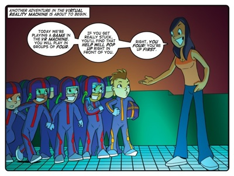
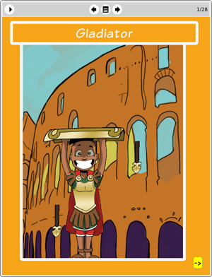

Story: The Game of Death
Theme: Changing your point of view.
Synopsis
The Virtual Reality machine sends The Thunderbolt Kids back to Imperial Rome to compete in a series of mental challenges against their peers. Their initial delight turns to horror when, back in the real world, Lazlo slyly turns the difficulty setting of their game way up. This turns their virtual reality distinctly nasty as the Emperor threatens to feed Farrah to a tiger if her friends fail to complete his challenge. Meanwhile Lazlo’s group begin their game on a much easier setting.
When things turn really tough for The Thunderbolt Kids, help arrives in the form of a floating effegy of the mathematician, George Polya. Poyla asks questions which help the kids change the way the look at each of their challenges. That is, he helps them to change their point of view.
Poyla’s questions first prompt the Thunderbolt Kids to think like Romans to walk the ‘thousand steps’ through the first challenge. Similarly, it is only after they shelve their assumption that they have to face the second challenge head-on by dodging its blades that the kids can beat it. They follow the How to Solve It method of breaking problems up into easy steps to realise that breaking the machine is a lot simpler than dodging its blades. Each question-oriented strategy that they follow from the How to Solve It method is tantamount to a change in point of view.
Activity
This activity challenges learners to create a scytale cypher. The purpose of the activity is to allow the learners to work physically with a concrete example of how changing the way you look at something can change what you see. That is, looking at your scytale cypher on the wrong cylinder will show you nothing but gibberish. Viewing the same cypher on the appropriate cylinder will reveal it's hidden message. This is very similar to the benefits you gain from changing your point of view when examining anything from a math problem to a political argument. Being able to switch your point of view will help you to see things you didn't see before and this can lead you to finding solutions that you didn't think were possible.
In doing this activity we want learners recognise that there isn't only one way to look at a challenge. There are many. And some are more helpful than others from time to time.

The eToys project: Gladiator
In this project Sophie shows learners how to create a simple game in eToys. To create this game effectively learners must put themselves in the shoes of the gladiator character onscreen and see the game from his point of view. Once again, this is not a rocket science project. It is simply giving learners an opportunity to practise adopting a different point of view within the framework of an eToys project. Once again, learners are playing in mathland.